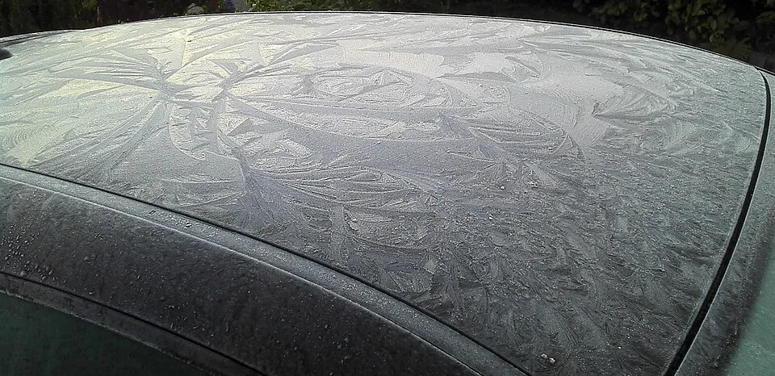
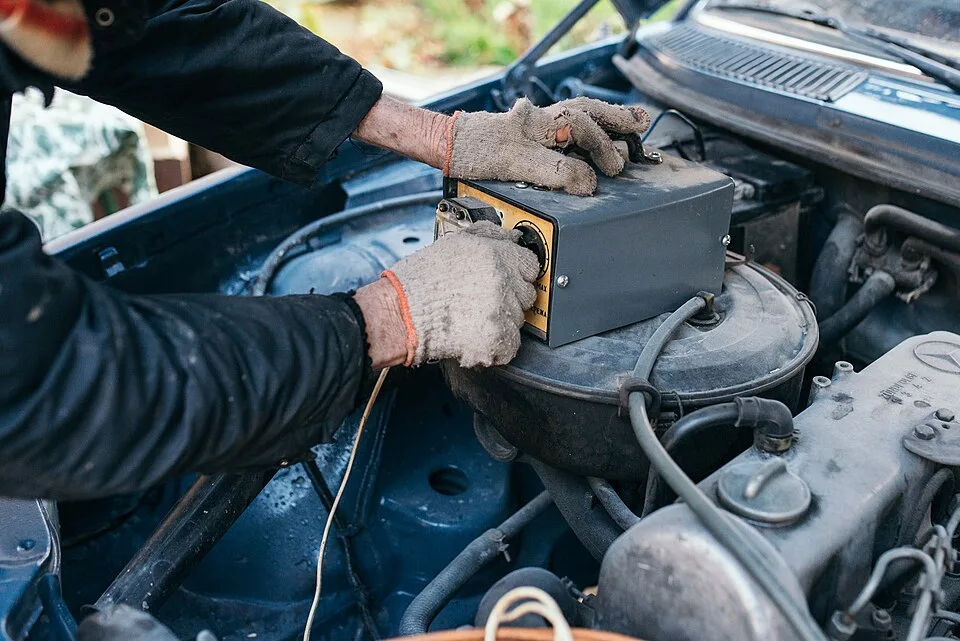
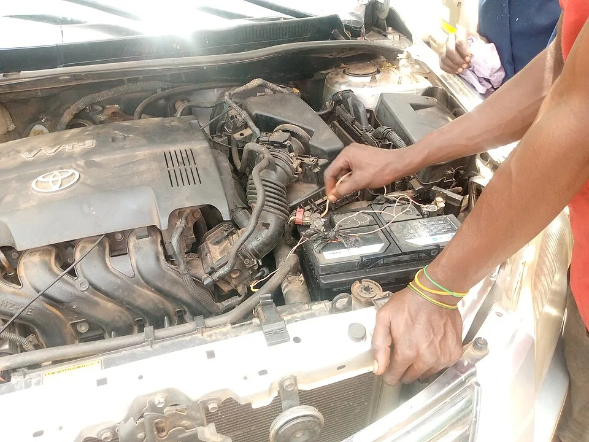
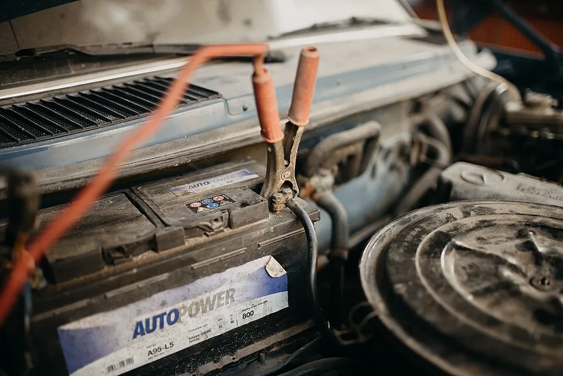

▲ 기온이 큰 폭으로 떨어지는 환절기에는 배터리 내부 화학반응 속도가 느려지며 시동 성능이 눈에 띄게 저하된다
1. 왜 하필 요즘 시동이 무겁게 걸릴까
가을에서 겨울로 넘어가는 환절기에 시동 불량 신고가 유독 늘어나는 데는 명확한 화학적 이유가 있다. 납산 배터리는 내부의 묽은 황산 전해액과 납 극판이 화학반응을 일으켜 전기를 만들어내는데, 이 반응 속도는 온도에 크게 좌우된다. 기온이 낮아질수록 전해액의 점도가 높아지고 이온의 이동 속도가 느려지면서, 배터리가 순간적으로 뽑아낼 수 있는 전류량 자체가 줄어든다.
미국 배터리위원회(Battery Council International)의 조사에 따르면 배터리는 영하 18도(0°F)에서 완전충전 용량의 약 50%까지 떨어지고, 영하 30도(-22°F) 부근에서는 그 이상 손실되는 것으로 나타났다. 반대로 겨울철에는 엔진오일 점도가 높아져 크랭킹에 필요한 힘 자체도 커지는데, 정작 이를 감당할 배터리의 출력은 줄어드는 이중고가 겹치는 셈이다. 이는 '블랙박스가 배터리를 방전시킨다'는 것과는 별개로, 배터리 자체의 성능이 기온에 반응해 떨어지는 근본적인 현상이다.

▲ 기온이 떨어지기 시작하는 환절기일수록 배터리 상태를 미리 점검해두는 것이 시동 불량을 예방하는 가장 확실한 방법이다 ⓒ Wikimedia Commons
2. 크랭킹 앰프(CCA), 저온에서 왜 줄어드나
배터리 스펙에 적힌 CCA(Cold Cranking Amps, 저온 시동전류)는 영하 18도 상태에서 완전충전된 배터리가 30초 동안 7.2V 이상을 유지하며 뽑아낼 수 있는 최대 전류를 의미한다. 이 수치가 클수록 추운 날씨에서도 시동 모터를 강하게 돌릴 여력이 크다는 뜻이다. 문제는 배터리를 오래 쓸수록 극판이 황산납으로 서서히 뒤덮이는 '설페이션' 현상이 진행되면서 실제 CCA가 스펙보다 훨씬 낮아진다는 점이다.
여름철에는 이런 성능 저하가 잘 드러나지 않다가, 기온이 떨어지는 순간 시동 지연·크랭킹 소리 약화 같은 증상으로 한꺼번에 나타나는 것이 겨울철 배터리 고장이 몰리는 이유다. 정비 업계에서는 통상 매년 기온이 큰 폭으로 떨어지기 시작하는 시점에 배터리 관련 긴급출동 요청이 눈에 띄게 늘어난다고 설명한다.
3. 전압계로 직접 확인하는 법 — 숫자로 보는 배터리 상태
배터리 상태는 감으로 판단하지 말고 전압계(멀티미터)로 직접 재보는 것이 정확하다. 시동을 끄고 최소 30분~1시간 이상 방치한 뒤(전조등·실내등 사용 후라면 더 오래), 빨간 탐침을 (+) 단자에, 검은 탐침을 (-) 단자에 대고 DC전압 모드로 측정한다. 시동을 켠 상태에서도 한 번 더 측정해 충전 전압이 정상 범위인지 확인하는 것이 좋다.
| 측정 조건 | 전압 범위 | 상태 판단 |
|---|---|---|
| 시동 OFF (정상) | 12.4~12.6V | 정상, 충전 상태 양호 |
| 시동 OFF (경고) | 12.0~12.3V | 충전 필요, 방전 진행 중 |
| 시동 OFF (위험) | 11.9V 이하 | 과방전, 시동 불가 가능성 높음 |
| 시동 ON (정상) | 13.7~14.7V | 알터네이터 충전 정상 |
| 시동 ON (저전압) | 13V 미만 | 알터네이터 또는 배선 이상 의심 |
| 시동 ON (과전압) | 15V 초과 | 전압 조절기 이상, 과충전 위험 |
12.4V는 정상 범위의 하한선에 걸쳐 있는 수치로, 당장 위험하지는 않지만 반복적으로 이 수준에 머문다면 배터리 자체의 충전 유지 능력이 떨어지고 있다는 신호로 봐야 한다. 계기판이나 배터리 상단의 인디케이터 창이 녹색이면 정상, 검은색이면 충전 부족, 흰색이면 노후·점검이 필요하다는 뜻이지만, 인디케이터는 배터리 내부 6개 셀 중 단 하나의 상태만 보여주는 만큼 전압계 측정이 더 신뢰할 수 있는 방법이다.

▲ 배터리는 보닛을 열면 대부분 엔진룸 한쪽에 위치하며, 단자 주변 부식이나 헐거움도 함께 점검해두는 것이 좋다 ⓒ Wikimedia Commons
4. "3년 넘었다"… 노후 배터리, 이런 증상이면 교체 신호
일반 납산 배터리의 평균 수명은 3~5년으로 알려져 있지만, 이는 어디까지나 최소 기준에 가깝다. 실제 수명은 주행 패턴, 충·방전 반복 횟수, 여름철 폭염 노출 정도에 따라 크게 달라진다. 정비 업계에서는 장착 후 3년이 지난 배터리라면 겨울을 나기 전 반드시 한 번은 상태를 점검할 것을 권장한다.
다음과 같은 증상이 나타난다면 단순 방전이 아니라 배터리 자체의 수명이 다했을 가능성이 높다. 첫째, 시동 시 크랭킹 소리가 예전보다 확연히 느리고 무겁게 들린다. 둘째, 배터리를 완전히 충전해도 하루 이틀 만에 다시 전압이 12V 초반대로 떨어진다. 셋째, 배터리 케이스가 부풀어 오르거나 단자 주변에 흰색·푸른색 부식 가루가 눈에 띄게 쌓인다. 넷째, 겨울철 아침마다 유독 시동이 늦게 걸리고 계기판 경고등이 깜빡인다. 이런 증상이 두 가지 이상 겹친다면 단순 충전이 아니라 교체를 검토해야 할 시점이다.

▲ 단자 주변 부식과 케이스 변형이 눈에 띄는 노후 배터리. 잦은 방전으로 점프 스타트를 반복해야 한다면 교체 시점을 넘긴 경우가 많다 ⓒ Wikimedia Commons
5. 환절기 배터리 관리, 이렇게 준비하세요
전압 관리는 거창한 장비 없이도 습관만으로 상당 부분 예방할 수 있다. 우선 단거리 주행만 반복하는 운전 패턴은 배터리가 충분히 재충전될 시간을 주지 못하므로, 주기적으로 20~30분 이상 주행해 충전 상태를 회복시켜주는 것이 좋다. 정비소나 카센터에서는 배터리 부하시험(로드 테스트)을 통해 실제 CCA가 스펙 대비 얼마나 남아있는지 확인할 수 있으며, 3년 이상 된 배터리라면 이 점검을 겨울 전에 받아보는 것이 안전하다.
전압계는 자동차용품점이나 온라인에서 저렴하게 구매할 수 있고, 사용법도 간단한 만큼 하나쯤 차량에 비치해두면 유용하다. 12.4V 밑으로 떨어지는 빈도가 잦아지거나 시동이 눈에 띄게 무거워졌다면, 방전 한 번 겪고 나서 교체하기보다 미리 점검받는 편이 시간과 비용 모두를 아끼는 길이다.
📍 배터리 전압, 이렇게 기억하세요
시동 OFF 상태에서 12.4~12.6V가 정상, 시동 ON 상태에서는 13.7~14.7V가 정상이다. 저온에서는 화학반응 속도 저하로 배터리가 뽑아낼 수 있는 실제 전류(CCA)가 줄어들며, 이는 블랙박스 상시녹화로 인한 방전과는 별개의 현상이다.
✅ 기온 하강기 배터리 점검 체크리스트
· 전압계로 시동 OFF/ON 상태 각각 측정, 12.4V 미만이면 충전 또는 점검 필요
· 장착 후 3년 이상 지난 배터리는 겨울 전 부하시험(로드 테스트) 권장
· 크랭킹 소리 약화, 재충전 후 급격한 전압 하락, 단자 부식은 교체 신호
· 단거리 주행만 반복한다면 주기적으로 20~30분 이상 운행해 재충전 필요
· 인디케이터 창은 셀 하나만 보여주므로 전압계 측정이 더 정확
6. 정리
기온이 떨어지는 환절기 시동 불량은 단순한 우연이 아니라, 저온에서 배터리 내부 화학반응 속도가 느려지고 실제 크랭킹 전류(CCA)가 줄어드는 배터리 고유의 현상이다. 시동 OFF 12.4~12.6V, 시동 ON 13.7~14.7V라는 정상 범위를 기억하고 전압계로 주기적으로 확인하는 습관, 그리고 3년 이상 된 배터리에 대한 사전 점검이 겨울철 갑작스러운 방전을 막는 가장 확실한 방법이다.